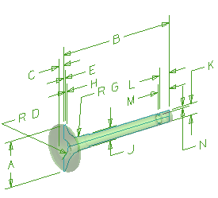
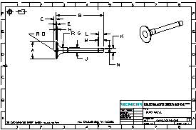

打开 drf3_auto_valve_dwg。

这个部件是用主模型部件的草图生成的，驱动草图的参数在一个部件族电子表格中。
开始制图应用模块以显示图纸页 Sheet 1。

此部件的设计者已经从草图中将所有的尺寸约束导入到平面图中。
您将放置一个表格注释到图纸页中，首先，您要创建一个一般的表格注释(单元格中不包含值)，然后您将从部件族电子表格中导入值到一般表格注释中。
当这些结束后，表格注释中的所有值都与电子表格关联，这意味着如果电子表格中的值发生变化，您将会看到在视图中反映出新的值。